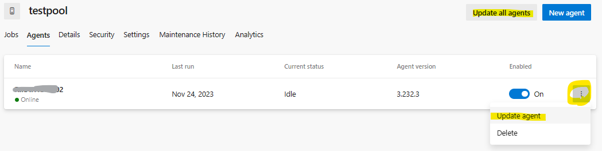

こんにちは、Japan Developer Support Core チームです🐶
今日は Azure DevOps における縁の下の力持ちである Azure Pipelines エージェントの更新についてのお話です。
Azure Pipelines エージェントは、Azure Pipelines と連携してビルドやデプロイを行うプログラムであり、Azure DevOps では、数週間おきに新しいバージョンの Agent プログラムをリリースしています。Microsoft-hosted agent は自動更新されるため、常に最新の状態を保っています。一方、Azure Virtual Machine Scale Set agent や Self-hosted agent は既定で自動更新されますが、この設定を変更して自動更新を停止することも可能です。 ただし、エージェントは最新バージョンのみがサポートされるため、トラブルが生じた場合は、特別な事情がない限り、最新バージョンの Agent プログラムの使用をお勧めします。
最新バージョンのエージェントのみをサポートしているのは、それがすべての最新のパッチとバグ修正が保証されている唯一のバージョンだからです。
なお、エージェントを常に最新バージョンとすることで、以下のような問題を未然に防ぐことができます。
- 互換性の問題: 新しいバージョンの Azure DevOps や他のソフトウェアとの互換性が失われ、パイプラインの実行が不安定になる可能性があります。
- セキュリティリスク: セキュリティ パッチが適用されず、セキュリティの脆弱性が修正されないため、攻撃者による悪用のリスクが増加します。
- 機能の制限: 最新の機能や改善が含まれるエージェント バージョンを利用できず、効率的な開発やデプロイメントが妨げられます。
- サポートの終了: 古いバージョンのサポートを段階的に終了する可能性があるため、問題が発生した際にサポートを受けられなくなります。
- パフォーマンスの低下: 古いバージョンは最新のハードウェアやソフトウェアの最適化が行われていないため、パフォーマンスが低下します。
互換性の問題の例
Azure Pipelines のタスクは、Node.js で開発されており、Node.js のサポート期限などに応じて新しいバージョンに対応するよう変更が行われます。またこれに伴い、タスクの処理を実行するエージェントも変更に対応できるよう随時更新されています。 たとえば、SSH タスクは Node.js バージョン 10 を使用していましたが、そのサポート終了に伴い、バージョン 16 以上へと更新されています。そして、エージェントでも v2.206.1 から Node.js のバージョン 16 に対応しています。これにより、v2.206.1 以前のエージェントで SSH タスクを使用すると、下記エラーが発生します。
1 | [error]A supported task execution handler was not found. The task does not carry an implementation that is compatible with your current operating system 'Windows(X64)'. Contact the task author for more details. |
この場合は、エージェントのバージョンを v2.206.1 以降のバージョンに更新することで、エラーを解消できます。
エージェントの更新方法について
エージェントの手動でのバージョンアップは、Azure DevOps Services の Web ポータルから行うことができます。以下に具体的な手順を紹介します。
- [Organization settings] - [Agent pools] ページを開きます。
- 対象のエージェントがある Agent Pool を選択します。
- [Agents] タブを選択し、登録されているエージェントの一覧とバージョンを確認します。
- 対象のエージェントの右端にある [Update agent] をクリックします。  ※複数のエージェントを更新する場合は、右上にある [Update all agents] ボタンを使用できます。
- [Update] ボタンをクリックしてバージョンアップを進めます。
エージェントがオンラインの場合、バージョンアップ用のジョブがキューに登録され、エージェントが自動的にパッケージのダウンロードからバージョンアップまでを行います。オフラインの場合は、エージェントを起動してから更新を実施してください。
注意点:
- エージェントがバージョンアップを行うためには、パッケージのダウンロードが可能である必要があります。ファイア ウォールやプロキシの設定を確認し、必要な URL へのアクセスを許可してください。これらの URL は、下記公式ドキュメントに「Agent Package」として記載されています。 I'm running a firewall and my code is in Azure Repos. What URLs does the agent need to communicate with?
- パッケージのダウンロードが許可されていない場合は、いったんエージェントを削除し、新しいバージョンのパッケージを使用して再登録する必要があります。具体的な手順については エージェントの削除と再構成 をご参照ください。
- Environments や Deployment groups にターゲット マシン（エージェント）を登録した場合は、最初にインストールしたエージェント バージョンにて動作し、Agent pools のように、自動的にエージェント バージョンを更新するような機能はありません。 Environments の場合、エージェント バージョンを最新へ更新する方法としては、以下のとおりです。
[Organization Settings] > [Deployment pools] を開きます。
"environment-" から始まる名前の pool を確認し、更新対象のターゲット マシンを検索します。
"environment-" から [...] を選択して、[Update targets] を選択します。
Deployment groups の場合は、[Devployment groups] からエージェントを選択して、同様に [Update targets] から更新可能です。詳細については、配置グループにエージェントを設定する をご確認ください。
なお、通信上の問題等で自動更新の設定を変更したい場合は、以下のとおりです。
自動更新の設定変更方法について
Azure DevOps ポータル (https://dev.azure.com/{Organization 名}) へアクセスし、[Organization settings] を選択します。
[Agent pools] を選択し、目的の Agent pool を選択します。
[Settings] タブ内、[Agent update settings] の [Allow agents in this pool to automatically update] を OFF にします。既定では ON です。
自動更新には適切な通信設定が必要です。エージェントは Azure DevOps サービスと通信して最新の状態を保つため、ファイア ウォールやプロキシの設定を確認し、必要な通信が行えるようにしてください。通信上の問題で自動更新ができない場合は、上述のエージェントの削除と再構成が必要です。
最新の技術を安全に、そして効率的に利用するためにも、エージェントのバージョン管理には十分注意してください。 皆様の開発環境が常に最良の状態であることを願っています。
本ブログの内容は弊社の公式見解として保証されるものではなく、開発・運用時の参考情報としてご活用いただくことを目的としています。もし公式な見解が必要な場合は、弊社ドキュメント (https://learn.microsoft.com や https://support.microsoft.com) をご参照いただくか、もしくは私共サポートまでお問い合わせください。